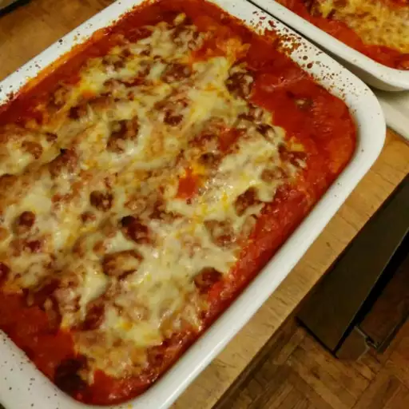

Home

Receita de Lasagna Italiana
Essa lasanha foi minha mãe que me ensinou e ela aprendeu com a sua sogra, que era minha vó italiana, D. Núncia, que era mãe do meu pai e de mais outros 9 filhos. Deu para entender?…rs!
Sabia cozinhar de verdade todas aquelas iguarias da culinária italiana e repassou muitas das receitas e o gosto de cozinhar, para as noras e filhas que até hoje cozinham divinamente.
O meu molho de tomates é uma adaptação mais moderna, menos trabalhosa e que fica gostoso também, pois uso tomates pelados em lata, além dos tomates frescos.
E lasanha boa é aquela que tem muito molho e muuito queijo, para ser devorada quentinha saindo do forno. Tudo proporcional…massa, queijo e molhos que podem ser variados ao gosto do freguês.
A receita básica para mim é a mais gostosa, pois tem sabor de infância das ocasiões especiais em que a lasanha era esperada com água na boca.
Ingredientes para o molho de tomate
- - 02 latas de molho de “tomates pelados” sem tempero
- - 02 tomates maduros e firmes
- - 03 dentes de alho amassados
- - 01 cebola picada
- - 01 cenoura cortada ao meio
- - 01 talo de salsão
- - 02 colheres de sopa de azeite
- - 01 colher de chá rasa de sal
- - pimenta do reino
- - 01 galho de manjericão
- - 01 folha de louro
Mode de Fazer
- 1. Bata uma lata de molho no liquidificador, junto com os 2 tomates e 1 dente de alho.
- 2. Reserve.
- 3. Amasse com um garfo os tomates da outra lata e reserve. (Lave com um pouco de água filtrada
os restinhos de molho que sobram dentro das latas e adicione no liquidificador junto com os tomates).
- 4. Numa panela, coloque o azeite, alho, cebola e as cenouras (servem para tirar a acidez dos tomates e
deixar o molho mais nutritivo), e refogue até as cebolas estarem transparentes.
- 5. Adicione os tomates batidos e amassados, o salsão, o sal, louro, pimenta e assim que começar a ferver,
abaixe o fogo com a panela tampada e deixe lá por 15 a 20 minutos, até engrossar e pegar gosto.
- 6. Quando o molho estiver quase pronto, verifique o sal e coloque mais um pouco se necessário,
juntamente com o galho de manjericão lavado.
- 7. Deixe ferver mais uns 2 minutinhos, desligue o fogo e retire os pedaços de cenouras, salsão e manjericão.
Ingredientes para o molho branco
- - 01 colher de sopa de manteiga
- - 02 colheres de sopa rasa de farinha de trigo
- - 03 xícaras de leite
- - 01 xícara de creme de leite (opcional)
- - 1/2 colher de chá de sal
- - 01 pitada de noz moscada ralada
Modo de Fazer
- 1. Coloque a manteiga numa panela e leve ao fogo.
- 2. Adicione a farinha de trigo e incorpore bem.
- 3. Adicione o leite aos poucos sem parar de mexer para não empelotar.
- 4. Acrescente o sal e noz moscada e deixe ferver um pouco para terminar de engrossar sem parar de mexer.
- 5. Desligue e adicione o creme de leite. Adicione mais sal, se necessário.
Para a Lasanha
- - 1 1/2 pacote de lasanha pré cozida (daquelas que vão direto ao forno)
- - 1/2 kg de muçarela ralada
Montagem
- 1. Coloque num refratário a primeira camada de molho de tomates, depois a massa, molho e queijo.
- 2. Na segunda camada, coloque a massa, molho branco e queijo e vá fazendo outras camadas até terminarem os ingredientes, finalizando com molho de tomates, muçarela e parmesão ralado.
- 3. Leve ao forno por mais ou menos 25 minutos para ficar gratinado e com o queijo bem derretido.
- Prontinho!